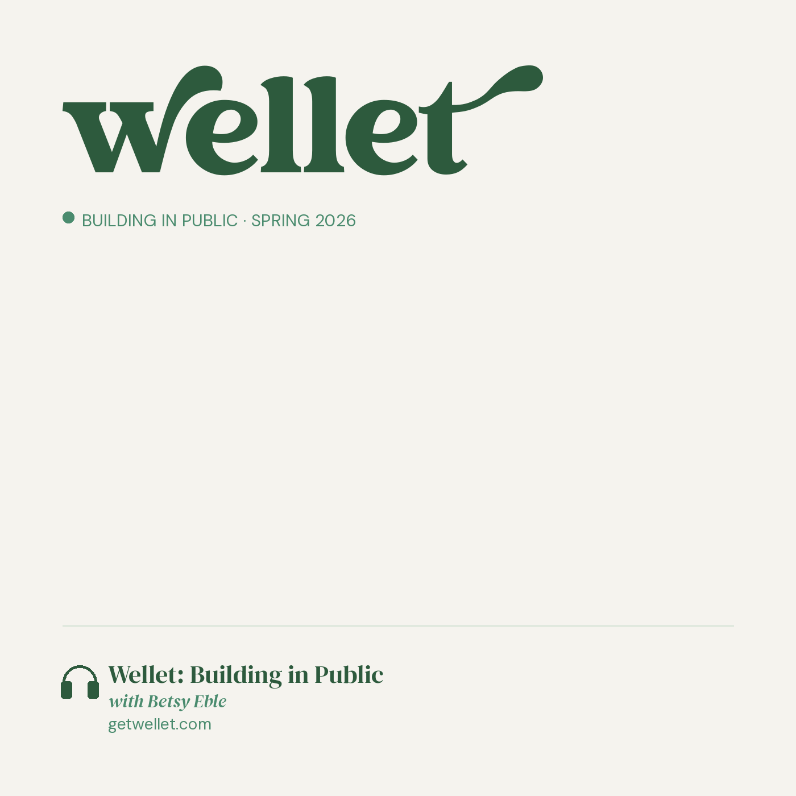

The first day of the Billion Dollar Build. Why Wellet exists, what got built in 12 hours, and the decisions behind privacy-first architecture, the Fogg behavior model for AI voice, and a 30-second animated brand film made entirely in CSS. Auth screen redesign, PDF export, document viewer, responsive layout — and a promise: no shame in this app. Ever.
How health data actually gets into a caregiver’s hands. Direct EHR integration through 1upHealth and the FHIR standard, document uploads that parse MyChart ZIP exports and medication photos, and Apple Health for the daily picture between doctor visits. Plus: why the 21st Century Cures Act makes all of this legal, the design decision that you never type anything in, and the second Medium article on why caregiving guilt is structural.
Show notes: Caregiving Is a Design Problem, Not a Personal Failure (opens in new tab) (Medium)
Three days. Seven hundred and forty-two dollars in AI tools. And what that actually bought — a production health platform with more than twenty edge functions, a HIPAA-grade security audit, two websites, legal documentation, podcast episodes, and marketing content. The same work at market rates? Thirty thousand nine hundred dollars. A 97.6% cost reduction — not a knock on engineers, but a story about access. About what happens when domain experts finally have a way to build.
A Friday that wouldn’t end. Eleven features shipped in one day — notifications, PDF export, email sharing, shareable links, a five-step visit prep flow, Spanish language support, real wearable data through Terra, global search, push notification infrastructure, and the full Stripe billing system. Some are infrastructure. Some are the reason the app exists. A walk through which ones mattered and why — from the caregiver who forgets her question in the parking lot to the sixty-three million families navigating American healthcare in more than one language.
Day thirty-one. The TestFlight invitation is going out. Real testers, real beta build, real product in real hands. Between Episode 4 and this one, almost a month went by — and the gap between where the app was on day four and where it is on day thirty-one is hard to summarize. So this episode tries. The day Duke silently revoked our Epic scope and we shipped a new Confidential client by nightfall. The morning of April 26th, 8:27 AM, when Mom’s real chart connected end-to-end — eleven physicians, four with phone numbers from Duke’s directory, twenty-seven enriched through NPPES. The editorial redesign. OTP sign-in replacing Magic Links. CareSignals shipping May 6th. Moving PHI off OpenAI onto Azure for the BAA. Security audit. Account wipe utility. What’s actually in testers’ hands today: a real EHR connection, MyChart zip import, CareSignals that notices what’s changing, Visit Prep, Ask Wellet in plain English. It is not perfect. Nothing on day one ever is. But it is real, and it is in your hands.